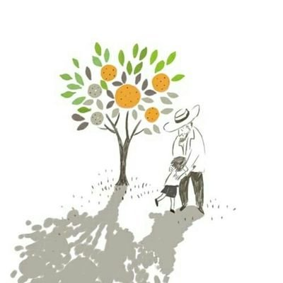

<!DOCTYPE html>
<html lang="kor">
<head>
    <link rel="stylesheet" href="my.css" type="text/css"> 
    <meta charset="UTF-8">
    <meta name="viewport" content="width=device-width, initial-scale=1.0">
    <title>Document</title>
</head>
<body>
    <header>
        <div class="header">

            <div class="book">
                
            </div>

            
                <div class="header_sp">
                    
                        <div class="box1">
                            <h1>나의 라임 오렌지 나무</h1>
                            
                                <details>
                                    <summary>책정보</summary>
                                    <div class="info">
                                        <p>《나의 라임 오렌지나무》(포르투갈어: Meu Pé de Laranja Lima, 영어: My Sweet Orange Tree)는 브라질 작가 조제 마우루 지 바스콘셀루스가 1968년 발표한 소설이다. <br>
                                        간행 당시 유례없는 판매기록을 세웠고 영화화되기도 하였다. 또한 브라질 초등학교 강독 교재로 사용됐고 미국 유럽 등에서도 널리 번역, 소개되었으며 전 세계 19개국에서 32개 언어로 번역되어 출판되었다. <br>
                                        한국에서는 1978년 발간됐지만 처음엔 별 호응을 얻지 못했다. 그러나 1980년대 들어 독자들 사이에 소문이 퍼지면서 베스트셀러 대열에 올랐고 지금까지 300만부 이상 팔렸다. <br>
                                        «나의 라임 오렌지나무» 이후에 '호징냐, 나의 쪽배', '광란자', '햇빛사냥'이 연달아 출간되었다.</p>
                                    </div>
                                    
                                </details>  
                                
                                <details>
                                    <summary>주요 등장인물</summary>
                                    <div class="info">
                                        <ul>
                                            <li>제제(Zezé) <br>
                                                <p>«나의 라임 오렌지나무»의 주인공으로, 제제는 애칭이며 본명은 조제(José)이다. 5살의 아이지만 생각과 행동은 상당히 어른스럽다. <br>
                                                글로리아 누나, 엄마, 루이스를 제외하면 항상 맞고 지내면서도 씩씩하고 용감하다. 형 대신 얻어맞을 것을 알면서 싸움에 나가기도 하며, 루이스에 대한 책임감 역시 대단하다. <br>
                                                제제가 여러 말썽을 부린 것은 애정결핍과 과도한 학대(냉대와 매질)로 인한 가능성이 크다. 사실 제제가 당하는 학대를 봤을 때 제제 정도면 참 잘 성장하였다고 볼 수 있다.</p>
                                            </li>

                                            <li>밍기뉴(Minguinho) 또는 슈르르까(Xururuca) <br>
                                                <p>제제가 이사한 집에서 유일하게 마음에 들어한 나무이며, 작품의 또 하나의 주인공으로 1부의 주인공이다. 밍기뉴는 평소에 부르는 이름이며, 슈르르까는 제제의 기분이 좋을 때 쓰는 애칭이다. <br>
                                                제제는 서부 영화의 말탄 카우보이를 생각하며 밍기뉴에 올라타 영화 속을 상상하기도 한다. 라임오렌지나무로 제제는 수시로 이 나무와 대화를 나눈다. <br>
                                                당연히 상상속의 존재이며, 나중에 밍기뉴가 말을 하지 않게 되었다는 말로 제제 내면의 완전한 성숙을 보여주게 된다.</p>
                                            </li>

                                            <li>포르투가(Portuga) <br>
                                                <p>사실상 2부의 주연이라고 할 수 있다. 본명은 마누엘 발라다리스(Manuel Valadares)이다. <br>
                                                포르투갈 사람이며 첫 등장에서는 자신의 차에 매달린 제제를 망신줬지만 두 번째 등장에서는 걷기 힘들어하는 제제를 병원에 데려다주고 화해하며 이후 제제에게 아버지와 같은 존재가 된다. <br>
                                                제제가 밍기뉴와 하는 대화나 제제의 심리묘사를 보면 제제가 뽀르뚜가를 얼마나 좋아하고 생각했는지 알 수 있다. <br>
                                                자신을 양자로 삼아달라는 제제의 말을 일단 거절하나 제제에게 부성애를 느끼고 있었던 것으로 볼 수 있다.</p>
                                                </li>
                                        </ul>
                                    </div>
                                </details>

                                <details>
                                    <summary>줄거리</summary>
                                    <div class="info">
                                            <p>주인공 제제는 브라질에 사는 5살짜리 소년이다. 
                                                가난한 생활 속에서 개구쟁이의 모습으로 라임오렌지나무 밍기뉴, 학교 선생님, 포르투갈 사람인 포르투가 아저씨 등과 사랑과 우정을 나누며 성장해간다. <br>
                                                 제제는 실직한 아빠, 공장에 다니는 엄마, 세 누나와 형 그리고 동생과 함께 가난하게 살아간다. <br>
                                                 한창 부모의 사랑을 받고 자랄 나이에 말썽을 부린다고 가족들로부터 냉대와 매질을 받는다. 집안이 가난하여 크리스마스에도 선물 하나 받지 못하여 한탄하기도 한다. <br>
                                                 그러나 제제는 절망하지 않고 마음속의 새와 집 앞 마당의 라임오렌지나무인 밍기뉴를 친구삼아 이야기를 나눈다. <br>
                                                 슬픔은 위로를 받고 기쁨은 함께 나누며 소문난 말썽꾸러기 제제는 이들과 함께 있을 때만은 착한 아이가 된다.</p>

                                            <p>어느 날 제제는 포르투갈 사람의 차아래에 달라붙었다가 들켜서 모욕을 당하고 복수를 다짐한다. <br>
                                                제제가 발을 다쳐 붕대를 감은 채 학교에 가는 중에 만난 그 포르투갈 사람은 제제를 병원으로 데리고 가서 치료를 받게 해준다. <br>
                                                처음엔 자신에게 창피를 주었던 포르투갈 사람의 차를 탄 것이 부끄러워 비밀로 해달라고 했었지만 <br>
                                                그후 두 사람은 친구가 되고 제제는 그를 포르투가라고 부르며 친아버지처럼 따르게되고 나서는 대화를 방해 받고 싶지않아 비밀로 하였다. <br>
                                                포르투가 아저씨는 제제에게 따뜻함을 느끼게 해주고 사랑의 소중함을 가르쳐준다. <br>
                                                그러나 어느 날 뽀르뚜까 아저씨는 열차와의 교통사고로 죽고 제제는 삶의 희망을 잃어버리고 병이 난다. <br>
                                                그리고 밍기뉴가 하얀 꽃을 피우자 제제는 그 하얀 꽃이 자신과 작별 인사를 하는 것이라는 사실을 안다. <br>
                                                밍기뉴도 어른 라임오렌지나무가 되었고, 제제는 가슴 아픈 상처를 통해 철이 들고 성장해 나가게 된다. <br>
                                            </p>
                                        </div>  
                                </details>
                                    
                                    
                                
                            
                            
                        </div>
                </div>
            
        </div>
    </header>
   

    <section class="main">
        
            <article>
                <div class="whole">

                    <div class="row">
                        <div class="cont" id="1">
                            <p>변신은 <br>
                                바뀜 또는 변화를 <br>
                                의미한다.</p>
                        </div>
                        <div class="cont" id="2">
                            <p>행복이란, <br>
                                우리가 그것이 있기를 바라는 장소에 있는 것이 아니라 <br>
                                자신만의 장소에 있다.</p>
                        </div>
                        <div class="cont" id="3">
                            <p>사람을 있는 그래도 봐야지. <br>
                                 그사람의 능력이상을 요구해서는 안된다.</p>
                        </div>
                        
                    </div>
                    
                    <div class="row">
                        <div class="cont2" id="4">
                            <p>기억을 하려면 <br>
                                먼저 잊어야 한다.</p>
                        </div>
                        <div class="cont2">
                            <p>어른이 된다는것을 <br>
                                두려워해서는 안돼</p>
                        </div>
                        <div class="cont2">
                            <p>내 가슴 속 새장이 <br>
                                텅 빈 것같아</p>
                        </div>
                        
                    </div>
                    
                    <div class="row">
                        <div class="cont3">
                            <p>난 아무것도 바라지않아, <br>
                                그래야 기분 상하는 일도 <br>
                                없으니까</p>
                        </div>
                        <div class="cont3">
                            <p>서로 잊지않고 <br>
                                가슴속에 깊이 품고있으면 <br>
                                사라지는 일은 결코 없단다</p>
                        </div>
                        <div class="cont3">
                            <p>아픔이란 <br>
                                가슴 속에 간직하고 <br>
                                죽어야 하는 <br>
                                 그런 것 이다</p>
                        </div>
                        
                    </div>
                </div>
            </article>
       

    </section>

    <footer>
        <div class="copyright">
            <b>copyright2020.11/hamy</b>
        </div>

    </footer>
    
</body>
</html>